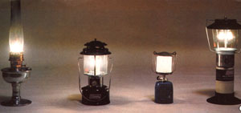
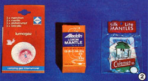
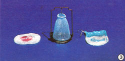
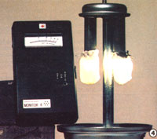
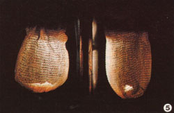
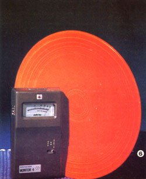
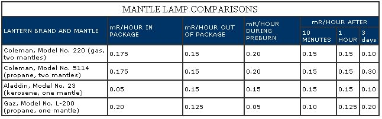
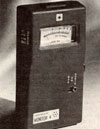
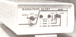

It now appears that the lantern-long a standby source of light-may pose a health threat.
The warm yellow glow of an open-flame kerosene lamp is comforting and-under the right circumstances-even romantic, but almost anyone who's tried to read by the light of one of the standard wick-type lanterns fully appreciates the usefulness of the mantle lamp. When the mantle (a small cylindrical hood, which-when placed over a flame-becomes white hot and gives off very bright light) was incorporated into the design of gas, kerosene, and oil lamps about 100 years ago, the light intensity of such devices jumped from about 15 watts to nearly 60. With this refinement, folks were significantly more able to continue their daytime activities after darkness fell than they'd ever been before!
Today, many campers and residents of nonelectrified areas (as well as individuals who have chosen to do without electricity) rely on light provided by mantle lamps for reading, sewing, and other close work . . . and they've been pretty clanged grateful for that eye-saving illumination, too. However, although most people are unaware of the problem, the mantles in such lamps are actually radioactive . . . possibly enough so to threaten the health of folks who depend on them.
The mantles used on modern lanterns acquire their radioactive properties during the manufacturing process. First, the fabric that will eventually form the small rayon mesh pouches is dipped into a solution of thorium and cerium nitrates. The nitrates are then precipitated into the cloth with ammonia, and-after it's dried-the mantle is coated with nitrocellulose, which fixes the ammonia salts and improves the preburning capability of the material. Occasionally, a manufacturer will also add a small amount of beryllium to give the ash (the residue that's left behind after the lantern's nitrocellulose-assisted initial burn) greater strength. However, it's the thorium in the mantle that incandesces and gives off the functional white light.
Unfortunately, that same element is radioactive. It is-to be more precise-an alpha-particle-emitting radioisotope which has a decay series of ten radiodaughters (a "daughter" is an element that is an immediately produced by-product of the disintegration of a radioactive element). The first radiodaughter is radium 228, a betaemitter which-in time-produces subsequent alpha-emitting radiodaughters.
The difference between alpha and beta particles is an important one for lantern users to understand. Both types of emissions are referred to as short-range radiation: Alpha particles are large and slowmoving, and can easily be stopped by such a barrier as a piece of paper or the glass chimney of a lantern . . . while beta particles are smaller and faster, and can penetrate body tissue. Either type can pose a health risk to the body if its emitters (in this particular case, thorium and radium) are inhaled or ingested . . . with the alpha particle being the more dangerous.
Inside the body, you see, "alphas" often travel a distance equal only to a cell's diameter, concentrating their effect in one tiny location. Therefore, alpha energy can overwhelm a cell's chemistry, possibly targeting the stricken spot for a future cancer, or altering the cells genetic matter. (EDITOR'S NOTE: Refer to the Medical Self-Care column "Are Cigarettes Radioactive?" (issue 74) for a discussion 'of the health effects of lowlevel radiation. To order back issues, turn to page 48.1
The manufacturers of lanterns and mantles (Coleman and Aladdin are the largest of such firms) are well aware of thorium's radioactive properties, since they must be licensed by the Nuclear Regulatory Commission to possess and process the material and, furthermore, are required to label bulk shipments of the mantles as "radioactive" during transport. However, the companies have rejected any suggestion that they put warning labels on individual mantle packages, maintaining that the level of radiotoxicity is "insignificant".
The industry position is based, in part, on a 1979 study by Milo Voss-a health physicist from Ames, Iowa-which characterized the alpha-emitting nature of thorium as relatively harmless unless the particles are ingested or inhaled. Even if the risk is that limited, though, there's a strong likelihood that an unsuspecting individual could breathe in airborne radioactivity, without being aware of it, while lighting a mantle.
CONSUMER ACTION
Until recently, only a few people were informed of the health risks posed by mantle lamps. Some mention of the issue had been made in several California newspapers, but no widespread attention had been drawn to the problem.
In fact, if it hadn't been for Walter Wagner, a health physicist employed by the Veterans Administration Medical Center in San Francisco, the entire matter might have escaped large-scale public notice. As it happened, though, Wagner toured the Rancho Seco nuclear power plant near Sacramento, California in October 1980 . . . and-during his visit-a health physicist employed there pulled out a lantern mantle. The man never explained why he was carrying that small cloth pocket at a nuclear electricity-generating plant, but-in retrospect-Wagner suspects that the physicist may have been trying to point out that nuclear plant employees aren't the only ones exposing the public to radioactivity.
At any rate, what struck Wagner about the incident was that the mantle registered on the scintillation counter he'd brought along on the tour. He was surprised, because thorium is an alpha-emitter, and most such particles should have been stopped by the packaging. Reflecting on it later, Wagner decided that the counter was not registering thorium at all, but-instead-indicating the presence of some of its decay elements . . . so he bought a mantle to experiment with.
After confirming his theory, Walt contacted the Coleman Company in March 1981 to ask the firm to put warnings on mantle packages. When that effort proved unsuccessful, Wagner filed a $300 million class action suit, in November 1981, against the Coleman Company and other manufacturers of mantles . . . which seeks to return reputed damages to mantle purchasers and to require the companies to begin using warning labels on their products.
THORIUM AND HEALTH RISKS
By way of a little background, the thorium (Th-232) that's used in lanterns is a fertile nuclide, which can actually be bred into uranium 233 (U-233), a fissionable isotope suitable for nuclear weapons or reactors. (In fact, thorium itself has been used in reactors on an experimental basis and supposedly could have been bred into weapons-grade U-233 at the Osirak nuclear power plant located near Baghdad, Iraq, which was de stroyed by the Israelis on June 7, 1981.)
In a home or tent, the main danger in mantle use arises from thorium's first radiodaughter, radium 228 (Ra-228). Radium is a "bone seeker" . . . which means that it is biochemically analogous to calcium, and that the body will substitute it for calcium during periods of bone growth. Thus, the radiumladen fumes from lamp mantles present an obvious hazard to children who may be close by. Likewise, pregnant women and their unborn babies-could be endangered, since Ra-228 (and Ra-224), which can be inhaled and ingested by the mother, readily crosses the placental barrier and can be absorbed by the fetus. Similarly, a nursing mother who inhales volatized radium would pass some of it along to her infant.
TAKING PRECAUTIONS
While the chief sources of danger are the alpha-particle-emitting daughters of Ra-228, Wagner says that "significant" beta radiation can strike the body when a mantle is placed close to the skin. If it's carried in a shirt pocket, for instance, the breast and lung tissue will absorb radiation . . . and if it's put in a pants pocket, a man's testicles would be exposed to some low-level radiation (though the actual risk involved in either case is, at present, subject to debate). Wagner cautions that a mantle-even when it's new and still inside its packaging-should never be placed in pockets, and children should never be allowed to touch or play with the devices.
The Physicist further advises that the initial preburning, and all subsequent lighting, of mantles be performed in an open area with adequate air circulation . . . and that only after 15 to 20 minutes of burning should a mantle lamp be brought into a closed environment. What's more, Wagner notes that the thorium is in place even after the mantle has been burning. You see, one of the reasons manufacturers use thorium is that it has a very high melting point. Therefore, a mantle will continue to emit alpha radiation during use, with most of these particles being stopped by the glass chimney. On the other hand, once the mantle is lighted, most of the radium will boil off in the first 15 to 20 minutes, and the mantle won't emit further beta radiation until several days later . . . when Ra-224 is produced by the decaying thorium.
Wagner suggests that if you light your lamp once a day, it should be vented to the outdoors. If the lantern is used continuously, however, venting is probably not necessary, as the air change in the room should be adequate.
Users of mantle lamps should especially avoid breathing in the particulate ash or getting any ash in their food. ("Thorium ash is very bad to inhale," Walter says, "as it simply sits in the lungs for months to years, and when it eventually gets into the blood, it goes directly to the bone, where-again-it stays for years.")
It's impossible, of course, to avoid some exposure while changing the mantles . . . however, since that procedure normally requires only a few minutes, the total risk is small (less than one chance in a million of a resulting cancer). By contrast, leaving a mantle in a pocket for hours at a time increases the risk of cancer considerably (up to one chance in 10,000).
When it comes time to dispose of a mantle, Wagner suggests that the ashes not be deposited on a compost heap or tilled into garden soil, where the radiotoxicity could become part of the food chain. Rather, it's better to put the old mantle with trash that will be going to a landfill or other dump.
Given all the facts, why haven't mantle manufacturers admitted the hazard of thorium? That's a question Walt hopes to have answered when the suit comes to trial. (Following two postponements, a hearing is scheduled- as of this writing-for September or October of this year.) Coleman has called Wagner's allegations "preposterous" and charged that his conclusions are more "emotional than scientific".
In return, Wagner's suit claims that 1,000 persons have already suffered cancer or birth defects through improper use of the mantles . . . that 1,000 more will be stricken as a result of past exposure . . . and that manufacturers have been negligent by failing to warn users and to advise them of safety precautions that might have lessened or prevented injury.
Perhaps the welcome white light for nighttime reading isn't as necessary-or as benign-as we thought.
EDITOR'S NOTE: Walter Wagner, the radiation physicist who initiated the mantle suit against the Coleman Company and others, is the discoverer of the first piece of substantial evidence of the existence of magnetic monopoles, subatomic particles previously thought to exist but sought after for many years without success. Wagner's breakthrough occurred in 1975, while he was working on a physics experiment at the University of California at Berkeley.
NOTE: All readings were taken with the Radiation Alert Monitor 4 detector from a measuring distance of 1/8 inch. All readings were averaged during a 30-second exposure time. The Coleman 220 was taken on a camping trip during the three-day test interval, during which it was burned outdoors for about 36 hours . . . while the Coleman 5114 remained unlighted back in the laboratory. It's interesting to note that there's quite a difference between the three-day readings for the two lamps, both of which are equipped with a pair of mantles.
WHAT'S HOT . . . AND WHAT'S NOT
When MOTHER'S staffers decided to test lantern mantles far radiation while checking out Mary Anderson's story, we asked Walter Wagner for some tips on exactly what we should be looking for. He said that-with the right equipment-we should be able to record radioactivity emanating from the mantles at several stages . . . in the package, out of the package, during the preburn phase, and several days later when the thorium coating produces radium as a decay product.
Thus informed, we turned to the folks at Solar Electronics-a group connected with The Farm in Summertown, Tennessee-for advice about how to monitor the mantles. They furnished us with a Solar Electronics-made instrument-the Radiation Alert Monitor 4-which turned out to be a small, hand-held radiation detector that's sensitive to a broad spectrum of ionizing radiation . .. including alpha and beta particles, gamma rays, and X-rays.
Next, we gathered up several lanterns that used the suspect mantles and performed an informal experiment to check for radioactivity. Admittedly, our research was by no means controlled (for instance, one of the staffers borrowed a lantern for a weekend camping expedition during the rest, and thereby inadvertently provided some information on an in-use mantle) . none of us is trained in radiation detection . . . and our facilities are not equipped to measure-or control-the temperature at which each lantern burns.
However, despite such limitations, we were able to obtain the results Walt Wagner told us we would: The lantern mantles are radioactive . . . and this radioactivity persists because the thorium is producing a radioactive chain of decay products. Thus, the figures in the chart on the preceding page are useful for comparing the radioactivity of several types of mantles employed in a variety of lanterns.
Perhaps the main point of MOM'S little test, though, was that it awakened us to the prevalence of sources of low-level radiation. It's only recently that medical journals and other health forums have started discussing a possible link between lower-than-previously-assumed-dangerous levels of radiation and cancer. The big question, of course, is what dosage of low-level radiation places a human being at risk. This may never be adequately answered (and there may well be no "safe" dosage).
When we were talking to Dan Sythe at The Farm and mentioned the results of our mantle experiment, he pointed out that some people wear or carry watches that emit more radiation than a lantern mantle . . . many old timepieces and clocks were painted with radium to illuminate the dials (other substances are used today). Household radiation sources also include smoke detectors, old kitchen timers, and static eliminators (devices used to reduce static on film and records).
Still another source is old pottery or crockery that's decorated with red or orange glaze (the coloring can contain uranium). The orange plate pictured on a previous page-shown registering 0.5 milliroentgens (mR) per hour of radiation-belongs to a staff member . . . it's among a set of 1940's-vintage Fiesta ware that she was given by her grandmother.
And while we were exploring sources of radiation, we recalled recent warnings concerning the health risk of radon . . . a radioactive gas that's naturally present in nearly all rocks and soil, as well as in building materials such as brick or concrete. It appears that radon is more concentrated in airtight, energy-efficient structures than in others for at least two reasons: These buildings frequently rely on rock, brick, or concrete for heat sinks . . . and-because care is taken to minimize hear leakage-the air in such houses isn't changed very often. Therefore, more radon is produced and allowed to accumulate in the efficient dwellings.
We were interested enough, therefore, to check MOM'S house-the earth-bermed, hybrid solar structure at the Eco-Village-to determine whether it produces higher-than-normal levels of radiation. The structure didn't budge the detector's needle, though . . . but then, the house is located in-and largely built of materials from-a relatively old geographic region where naturally occurring levels of radiation are not as high as in some other parts of the United States.
In short, using the detector helped awaken us to the fact that low-level radiation is fairly prevalent . . . often in common, readily available consumer items. And as an outgrowth of their cooperation with MOTHER on this story, the folks at Solar Electronics have decided to make two types of instruments available to readers who might want to do some testing in their own homes or workplaces.
The Radiation Alert Monitor 4 has a meter that directly reads in milliroentgens (mR) per hour . . . plus a count light and "beeper" function. Three meter ranges allow detection of radiation levels up to 50 mR/hour, or up to 5,000 times natural background levels. Essentially, the instrument is a mini-Geiger counter for making precise measurements. A Radiation Alert Monitor 4 costs $150, plus $5.00 for shipping charges.
Another detector that some of you might find interesting is the Radiation Alert- Mini. This is a small instrument-which can be clipped in a shirt pocket or on a belt-designed to alert a person who is exposed to radioactivity by sounding an alarm. While there's no meter, the device does have a three-level alarm system of flashing LED's (light-emitting diodes) and audible tones.
According to Mr. Sythe, the Radiation AlertMini would provide good insurance for someone who might be exposed to radioactivity during the course of his or her work, or who lives in a "risk" area (perhaps close to a nuclear power plant) and would like to know about it if radiation levels were suddenly to surge. The Radiation Alert-Minis are available for $199 each (a unit customarily sells for $249.50, but Solar Electronics is discounting the device for MOTHER-readers only), plus $5.00 for shipping.
These radiation detectors can be ordered, far the prices mentioned above, from Solar Electronics, Dept. TMEN, 156 Drakes Lane, Summertown, Tennessee 38383. If you'd like to obtain more information about either device, simply write (please enclose a dollar or two to help defray mailing expenses) and request brochures. Or you might want to inquire about discounts on bulk orders (Solar Electronics has recently supplied a number of Radiation Alert-Minis to companies whose employees may be exposed to excessive radiation levels).
|
 |
 |
 |
|
 |
 |
 |
|
 |
 |
 |